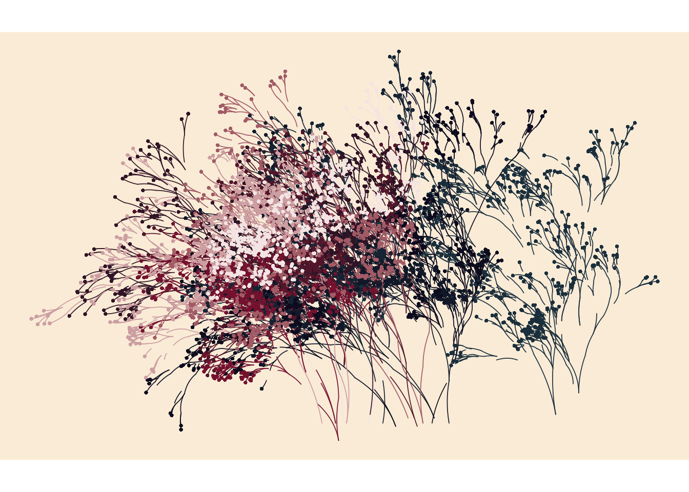

People often ask me if I have any words of advice for young people. No wait, that’s not right. Nobody wants to hear my words of advice for young people, largely because I have none. What they often do ask me is if I have any words of advice for aspiring generative artists who want to use R to make pretty pictures. To be honest, I don’t have a lot of advice there either, but I’ll try my best.
Let’s start with the big picture: there are no books or general purpose introductions out there. There are no books, no CRAN task views, no courses you can take. In fact, until quite recently generative art in R was an extremely niche topic. To my knowledge, the #rtistry hashtag on twitter is where you’ll find the most art and the most posts about the topic, but that hashtag is pretty new.1 There were resources that existed prior to that, of course: how could there not be? After all, Thomas Lin Pedersen has been building a toolkit for generative art in R for quite some time now. In his keynote talk at celebRation2020, he refers to an “art driven development” process that has led him to create several packages that are valuable to the would-be generative artist. For example:
ambient is amazingly useful when you want to play around with flow fields or generate interesting multidimensional noise patterns
particles provides a toolkit for particle simulation in R: it’s inspired by the d3-force javascript module, and is useful when you want to simulate forces acting on particles
ggforce provides a collection of tools that add some missing functionality to ggplot2, much of which is very handy when making art
These tools are great, but if you’re just getting started it can be helpful to play around in a more constrained environment. If you want something extremely simple, you could play around with the flametree package I wrote. It’s not very flexible (it just draws branching things!) but it does have the advantage that you can get started with something as simple as this:
library(flametree)# pick some coloursshades <-c("#1b2e3c", "#0c0c1e", "#74112f", "#f3e3e2")# data structure defining the treesdat <-flametree_grow(time =10, trees =10)# draw the plotdat %>%flametree_plot(background ="antiquewhite",palette = shades, style ="nativeflora" )

Playing around with a package like flametree – or jasmines if you want something a little more flexible – is a nice way to start drawing things, but at some point you might want to understand the process involved in creating a system like this. I’ve occasionally used art as a way to help teach people how to program in R, so you might find these programming of aRt slides helpful, and the precursor to flametree is discussed in my slides on functional programming.
Resources like mine can help get you started, but there are many other great artists out there who often post tutorials and walkthroughs. For instance, Antonio Sánchez Chinchón has a lot of really useful tutorials on his blog fronkonstin.com. Ijeamaka Anyene has written a lovely and gentle introduction to her system for rectangle subdivision. Will Chase writes about his process on his blog sometimes: here’s an example on a grid system. Jiwan Heo has a wonderful post on how to get started with flow fields in R among many other lovely posts! You can look outside of the R community too: Tyler Hobbs writes a lot of essays about generative art that describe algorithms in fairly general terms. For instance, one of my systems is built from his essay on simulating watercolour paints. And of course there’s also the walkthrough I wrote for one of my systems here and the piece I wrote that talks a little bit about the psychological process of making art in R.
My hope is that these resources will point you in the right direction to get started, but more than anything else I would emphasise that it takes time and effort. Art is a skill like any other. I’ve been practicing for about three years now, and while I am happy with the pieces I make, I still have a lot to learn. And that’s okay – one of the big things I always want to stress is that play is a huge part of the process. Making polished systems comes later!
In any case, I’ll leave this post as it is for now but if folks would like to suggest additional resources, I can always update it if need be!
Postscript
Okay, I’m going to start adding things. This is just a completely unstructured list for now, but I know how my brain works: if I don’t bookmark the cool posts and resources I see pop up on my timeline I’ll never find them again…
![]()